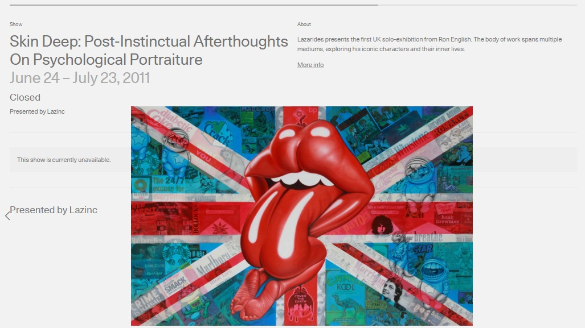
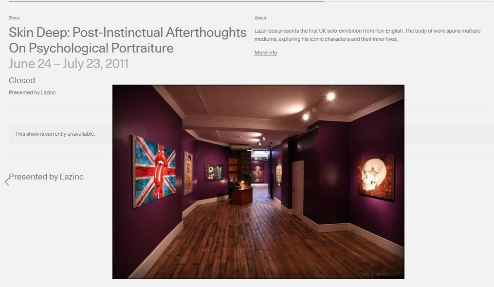
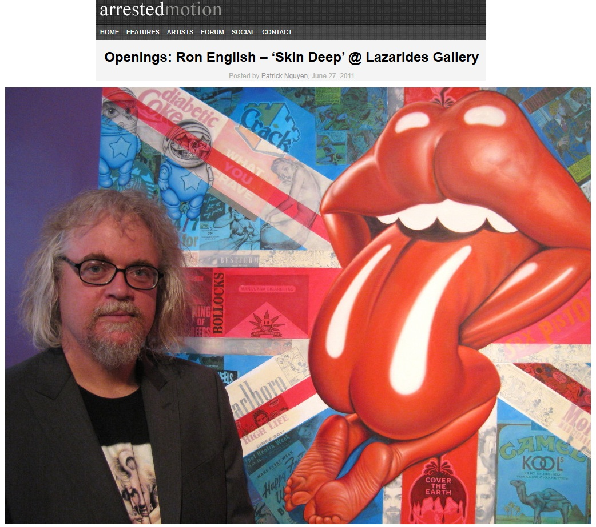
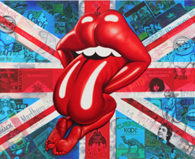
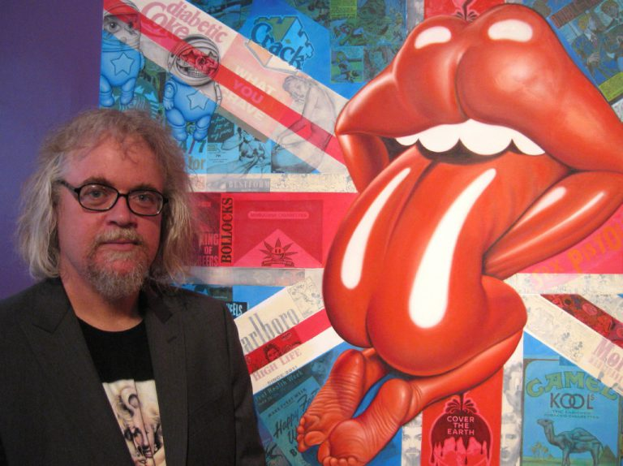

Exhibitions
Skin Deep: Post-Instinctual Afterthoughts on Psychological Portraiture, Lazarides Rathbone, London, United Kingdom, June 24–July 21, 2011.
They Would Be Kings: An Exhibition Curated by Steve Lazarides, Sotheby’s Hong Kong Gallery (S|2), Hong Kong, China, March 17–26, 2016.
Literature
Ron English, Death and the Eternal Forever (Korero Press, 2014), p. 113. ISBN 978-0957664920.

Ron English, Status Factory: The Art of Ron English (San Francisco: Last Gasp of San Francisco, 2014), p. 186. ISBN 978-0867197891.

Ron English, Original Grin: The Art of Ron English (Paris: Cernunnos, 2019), p. 310. ISBN 978-2374950938.

Graffiti Art Magazine, “Graffiti Art: Le magazine de l'art contemporain urbain”, Kennyscharf, January - March 2016.

“Postmodernist Appropriation, Ron English: Skin Deep, Lazarides Gallery, London”, A Esthetica Magazine, 2011.

“Postmodernist Appropriation, Ron English: Skin Deep, Lazarides Gallery, London.”, A Esthetica Magazine, no. July, 2011.

Rom Levy, “Ron English “Status Faction” New Print Available Today”, Street Art News, 2012.

Mark Westall, “ART PICS: Ron English ‘Death and the Eternal Forever’ Art Book Launch”, FAD Magazine, no. July, 2014.

“DU POP ART À LA POPAGANDA”, GRAFFITI ART, no. 28, January - February - March, 2016, p. 56.

“Pop Culture Looks Deadly”, Metro, August 19, 2014.

Florian Nardon, “Ron English – The Instigator of Modern Piracy”, Be Street, no. 17, June - July - August, 2012, p. 16.

Arrested Motion studio coverage. Archival screenshot from Arrested Motion ’s “Studio Visits: Ron English – Skin Deep @ Lazarides Rathbone Place,” June 14, 2011.
Notes
This work appears on Artsy’s show page for Skin Deep: Post-Instinctual Afterthoughts on Psychological Portraiture, presented by Lazinc.
The work appears in Arrested Motion’s opening photographs for Skin Deep, where it is identified as Status Faction and described as Ron English’s culture-jammed take on John Pasche’s Rolling Stones lips-and-tongue logo.
This work also appears in studio photographs published by Arrested Motion in “Studio Visits: Ron English – Skin Deep @ Lazarides Rathbone Place,” June 14, 2011.
The work later appeared in Sotheby’s Hong Kong exhibition They Would Be Kings: An Exhibition Curated by Steve Lazarides, where it was listed as Lot 8, Status Faction.
This composition was later adapted by the artist as a related archival pigment print with gloss varnish on Somerset Enhanced Satin 330gsm paper, published by Lazarides. Artsy describes the print as signed and numbered in pencil from an edition of 50, with sheet size 50 × 70 cm, while Art Collectorz records the related giclée print with silkscreen gloss as an edition of 50, 50 × 70 cm, published by Lazarides Editions on June 1, 2012, with a GBP £375 release price.
The composition also appears in FAD Magazine’s illustrated announcement for Ron English’s Death and the Eternal Forever art book launch at Atomica Gallery, as well as in selected online articles and image posts.
Later press coverage in The Sun refers to this work in connection with a reported theft involving Edgar Davids.
The work appears in Arrested Motion ’s opening photographs for Skin Deep, where it is identified as Status Faction and described as Ron English’s culture-jammed take on John Pasche’s Rolling Stones lips-and-tongue logo.
Ancillary Documentation







Selected Online Circulation
Selected online documentation related to this work, its exhibition history, related print documentation, and later circulation. This list is not exhaustive.